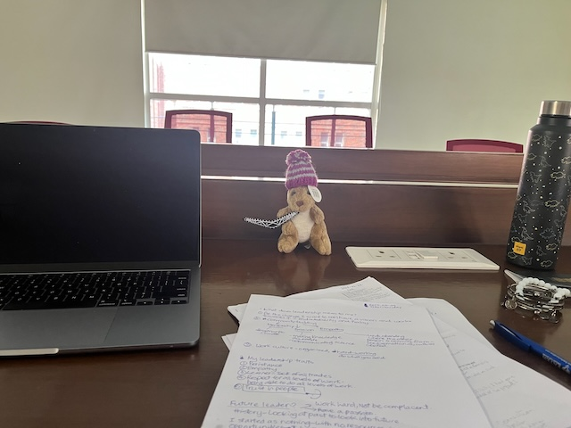

2025-03-12
As mentioned in my catch-up post, I have been shortlisted for Chevening interview. Ever since I heard the news on the 14th Feb., I have been excited and anxious. However, anxiety is slowly taking over. It’s been over a month, and I don’t think I have put enough efforts to prepare. I still don’t know how I would answer most of the questions. What kind of funny human am I? I really want the scholarship, but I am not able to actively work towards telling my story in the interview. I am overwhelmed by the sheer amount of information and advice online. What to focus on? What is relevant to me? I am also overwhelmed by the difficulty of the challenge ahead of me. With 50 students being selected for the scholarship, my probabilities of getting it is so low. Knowing this piece of information has only inhibited me from preparing for the interview, which as I write out, sounds so counter-intuitive. Shouldn’t I be preparing more rigoursly?
This week, finally, there is momentum in my preparation. I have written to two Chevening scholars. I spoke to Nehal, a YIF Chevening Scholar. I had a semi-mock interview with Peter. Yesterday, I spoke to Arushi about the anxiety I have been feeling. She tells me that I should be focusing on doing well in the interview, and not worry about my probabilities are, the high-stake nature of it, etc. Today, I finally sat down to strategise. I think I will think about how to answer one question every single day. There are 7-8 major questions; in a week I should have a narrative.

2025-04-24
I wasn’t diligent enough to keep track of my preparations here. But I gained momentum in that one month. I spoke to Peter everyday, almost. I reached out to 10s of Chevening Scholars, and took notes. I was all prepared, but…
The first interview question on conflict stumped me. I stammered, and did not give a coherent enough answer. I picked back up from the second question on, but then, I could not answer all the questions in the way I had planned :(
It’s fine. We tried. We gave our best. Now, it’s up to fate. 2 weeks after the interview, my answers haunt me. I want to move on, but I am not able to. Chasing dream is a difficult business.
My little set-up for the interview. AMI came along :)